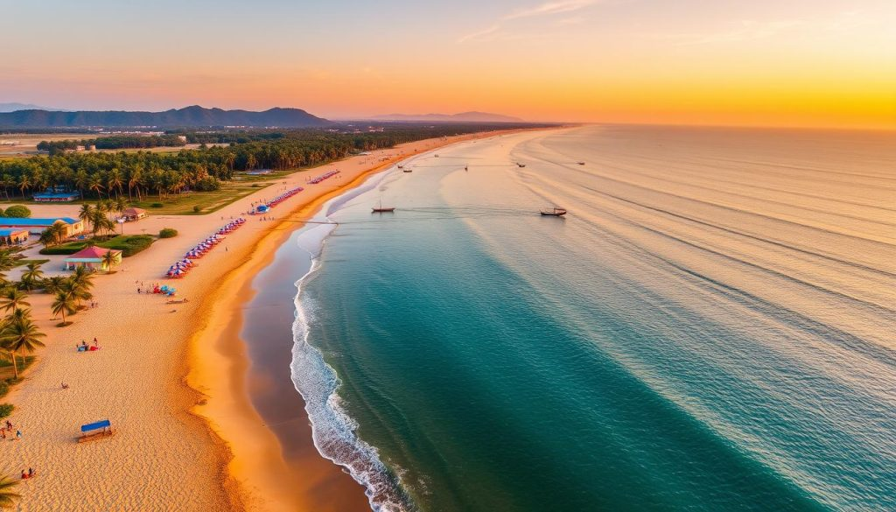
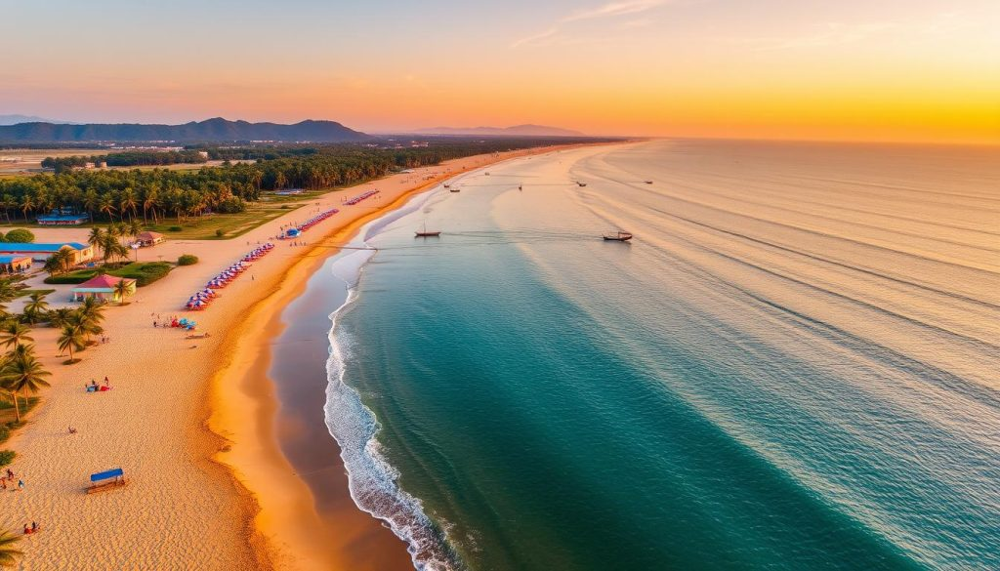
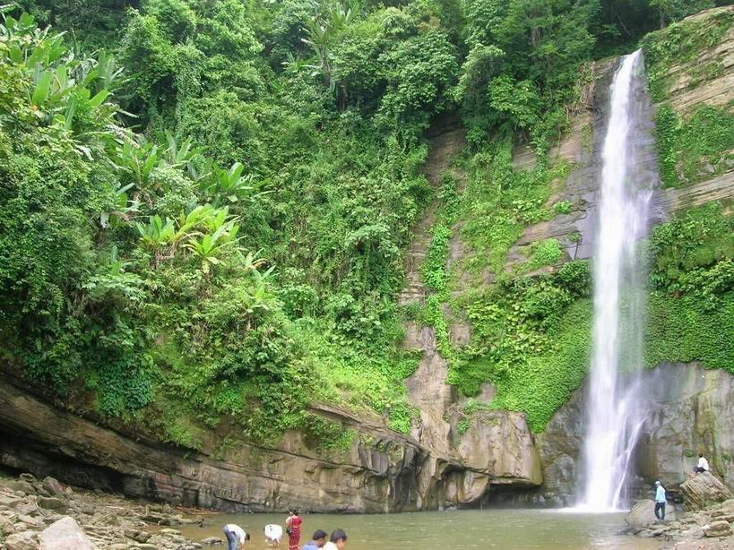

コックスバザールについて
コックスバザール（Cox's Bazar）は、バングラデシュ南東部にある世界最長の自然海岸で、その長さは約120kmにも及びます。美しい砂浜、夕日、そしてベンガル湾の景色で知られる人気の観光地です。
写真ギャラリー


 


有名な観光地
コックスバザール・ビーチ
世界最長の自然砂浜で、散歩や泳ぎ、ビーチアクティビティが楽しめます。夕日が特に美しい場所です。
イナニ・ビーチ（Inani Beach）

コックスバザールの南部にある美しいビーチで、透明な水とサンゴの石が特徴です。
ヒムチョリ国立公園（Himchari National Park）
滝や熱帯雨林、多様な野生生物が見られる国立公園。ハイキングに最適です。
サン・マーチン島（St. Martin's Island）
バングラデシュで唯一のサンゴ島で、シュノーケリングやダイビングが楽しめます。